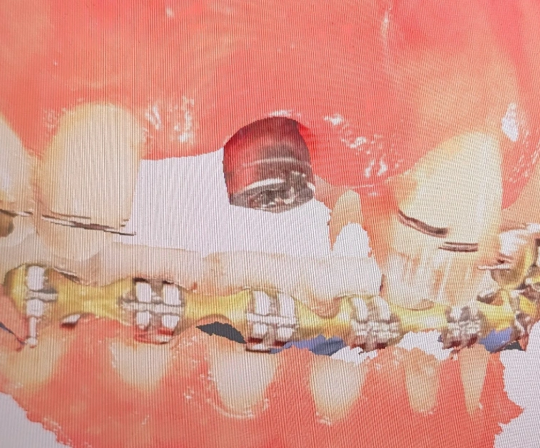

نسخه استخراجشده؛ ترجمه یا تأیید علمی انجام نشده است. وضعیت: captured
در این بیمار دندان سانترال با ایمپلنت جایگزین شده و ابعاد دندانهای قدامی کوچکتر از نرمال است؛ ارتودنسی هم در جریان است. متخصص ارتودنسی مرجع مشخصی برای تنظیم فضاها در اختیار ندارد. درمان را از کجا شروع میکنی؟

در کیسهایی که ایمپلنت و ارتودنسی همزمان درگیرند، یکی از چالشهای اصلی تعدد مجهولات و نبود یک مرجع مشخص برای تصمیمگیری است. اگر ترتیب حل مشخص نباشد، درمان وارد چرخهای از اصلاحات ناپایدار میشود.
ایمپلنت تنها جزء غیرقابل حرکت این معادله است و باید بهعنوان مرجع درمان انتخاب شود. با اسکن دیجیتال، برای ایمپلنت یک روکش موقت PMMA با ابعاد نرمال یک سانترال طراحی شد؛ نه صرفاً بهعنوان جایگزین، بلکه بهعنوان یک راهنمای سهبعدی در قوس. در طراحی این مرجع دو اصل رعایت شد:
پس از تثبیت مرجع، بیمار به متخصص ترمیمی ارجاع داده شد تا با ونیر کامپوزیت صرفاً ابعاد دندانها نرمال شود، بدون بستن فضاها؛ تا ارتودنسی فضاها را بر اساس ابعاد واقعی تنظیم کند، نه حدس. در صورت نیاز، روکش PMMA بهعنوان ساختاری قابل اصلاح میتواند توسط ترمیمی تراش داده شود یا با کامپوزیت اصلاح شود، بدون از دست رفتن نقش مرجع.
ابتدا حذف درجهی آزادی ایمپلنت، سپس تعریف ابعاد دندانی، و در نهایت تنظیم فضاها توسط ارتودنسی بر اساس دادههای قطعی.
در درمانهای بینرشتهای، اگر یک جزء غیرقابل تغییر وجود دارد، باید به مرجع تبدیل شود؛ تعریف زودهنگام این مرجع درمان را از حالت حدسی خارج میکند و به مسیری قابل پیشبینی میبرد. همین بیحرکتی ایمپلنت، وقتی ایمپلنت و دندان طبیعی در یک بریج کنار هم قرار میگیرند، چهرهی دیگری پیدا میکند.
در برخی بریجهای ثابت، یک دندان طبیعی در کنار ایمپلنت بهعنوان اباتمنت قرار میگیرد. دندان بهواسطهی لیگامان پریودنتال حرکت فیزیولوژیک دارد، در حالیکه ایمپلنت بهصورت ankylosed و تقریباً بدون حرکت عمل میکند. در این ترکیب، دندان از نظر بیومکانیکی رفتاری متفاوت پیدا میکند و گویی مانند یک «Living pontic» در سیستم حضور دارد؛ عضوی زنده که رفتار حرکتی و بیولوژیک آن با اجزای صلب سیستم یکسان نیست.
حرکت دندان طبیعی چندین برابر ایمپلنت است. این اختلاف باعث میشود نیروها بهطور یکنواخت در سیستم توزیع نشوند و طراحی پروتز توجه بیشتری بخواهد. شناخت این تفاوت کمک میکند طراحی اکلوزال محافظهکارانهتر انجام شود، از تمرکز تنش در سیستم جلوگیری شود و پایداری بلندمدت پروتز بهتر حفظ شود.
Living pontic یک جزء پروتزی نیست؛ توصیف رفتاری دندان طبیعی در کنار ایمپلنت است. درک این تفاوت، طراحی درمان را از یک نگاه صرفاً مکانیکی به سمت مدیریت هوشمندانهی نیرو و بیولوژی هدایت میکند.